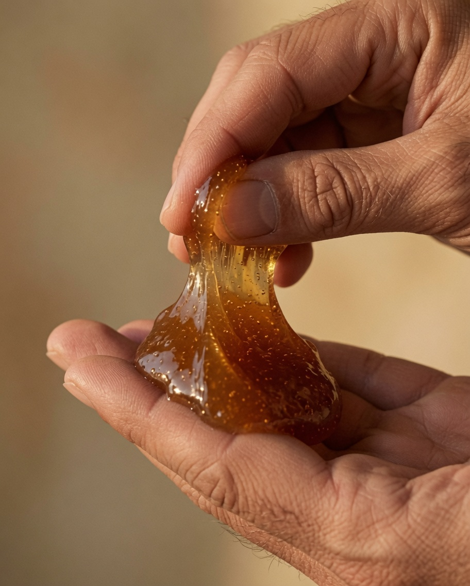
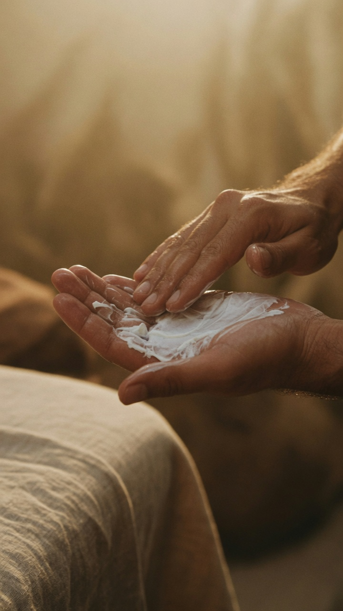
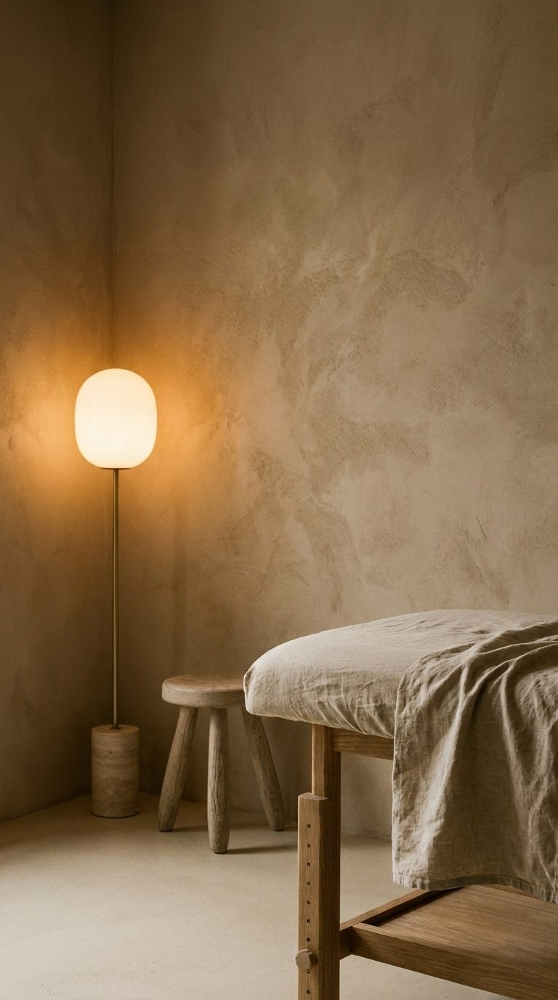
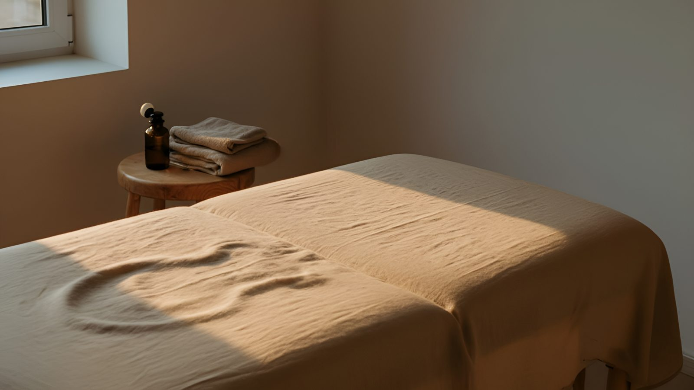

Я работаю руками, а замечаю глазами. За двадцать лет у стола я увидел о теле и о людях больше, чем ожидал. Здесь я это называю — как есть, без учебников.

«Держу этот бальзам в кабинете уже второй год. Использую перед плотной работой — на плечах, крестце, глубоких точках. Плотный, тянется за пальцем, не растекается. Хватает надолго. Работаю — доволен.»Читать полностью →

«Крем плотной текстуры — работаю им полтора часа подряд, не липнет, не улетает. После сеанса кожа как выдохнула.»Читать полностью →
Это не обучающий проект и не реклама услуг. Алексей — практикующий массажист из Минска, работает больше 20 лет. Пишет про тело так, как видит его руками: что замечает, что удивляет, что остаётся непонятным даже после тысяч сеансов. Без рецептов. Без обещаний.
Нет. Алексей не врач и не претендует на это. Здесь — наблюдения практика, не медицинские рекомендации. Если у вас что-то болит — это к врачу. Здесь другое: как тело ведёт себя, что оно говорит, когда его слушают руками.
Да. Работаю в двух форматах. Кабинет — за городом, тихо, есть парковка, можно закрыть дверь и оставить быт снаружи. Выезд — если нет ресурса на дорогу и хочется уснуть в своей кровати сразу после сеанса. Детали — в личку: @aleksei_massage_minsk.
Кабинет и выезд — Минск. Telegram и Pinterest — без географии. Туда заходят из разных стран, и это нормально: наблюдения про тело не знают границ.
В практике — больше 20 лет. Пришёл в профессию в 40, параллельно строил дом и вёл другие дела. Работал плотно — до десяти сеансов в день. До сих пор работает. Многие, кто начинал одновременно, уже нет.
Рубрика про объекты, с которыми работает Алексей: масла, инструменты, текстиль. Не реклама — наблюдения про то, как конкретная вещь меняет работу. Алексей пишет только про то, что реально использует.
Потому что это поиск, а не лента. Кто-то ищет «что такое зажим в плечах» или «как выглядит массажный кабинет в Минске» — и попадает сюда. Pinterest живёт медленно и долго. Пин, опубликованный год назад, работает сегодня.
«Мне нравится момент между сеансами, когда кабинет пустой. Свет, масло, край стола. Всё на месте. И ничего не нужно.»
Читать полностью →
